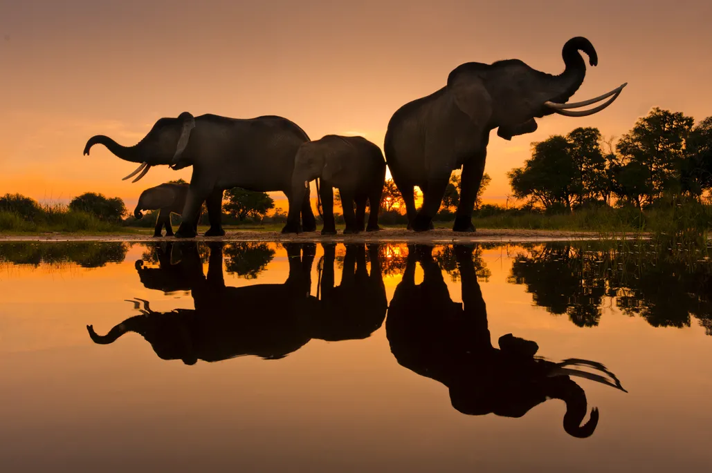

Photography is the art, application, and practice of creating images by recording light, either electronically by means of an image sensor, or chemically by means of a light-sensitive material such as photographic film Photography is the art, application, and practice of creating images by recording light, either electronically by means of an image sensor, or chemically by means of a light-sensitive material such as photographic film. It is employed in many fields of science, manufacturing (e.g., photolithography), and business, as well as its more direct uses for art, film and video production, recreational purposes, hobby, and mass communication. A person who makes photographs is called a photographer.
photography is constantly shape-shifting. A photograph can be taken in endless ways, and photographers are always looking for new boundaries to break in the medium. Knowing different types of photography will allow your own excursions into the medium to be all the more fruitfu
Types of photography:
Portrait photography
Landscape photography
Wildlife photography
Sports photography
Candid photography